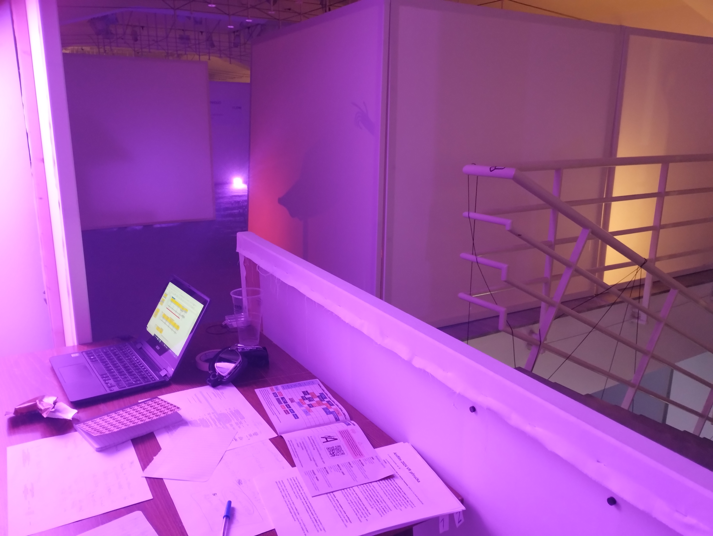
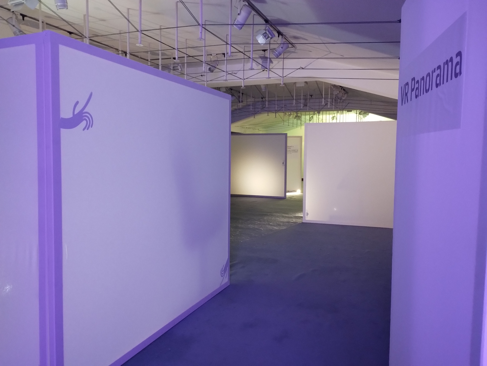
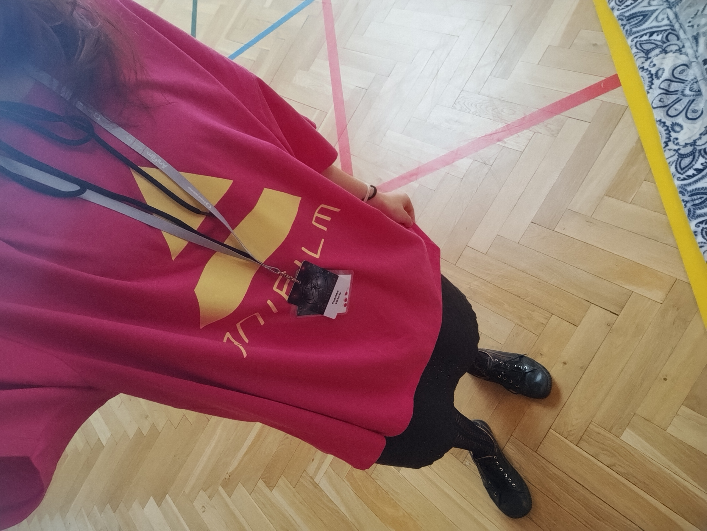

Volunteering
Throughout my studies, I regularly volunteered at a student animated film festival called AniFilm and at a local preschool.
At the preschool, I helped out with garden work—I mowed the lawn, planted flowers, tidied up toys, and did all those routine garden tasks. At AniFilm, I held many volunteer positions—I checked tickets, cleaned the theaters, registered visitors at the VR reception desk, and worked at the Infopoint. What I enjoyed most was getting to attend VIP events as a volunteer. There, we served drinks, restocked the desserts, and chatted with the guests, which was probably the most fun part.
I don't have any photos from the preschool because I wasn't allowed to take pictures there due to the rules. But I do have a few photos from the festival.


